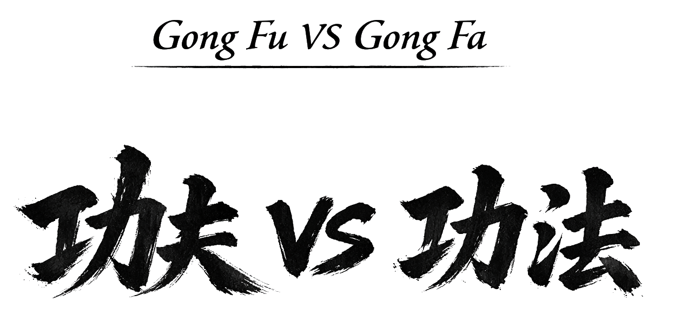

El término Gong Fu (popularmente “Kung Fu”) se utiliza a menudo para referirse a las artes marciales chinas, aunque esta asociación no es del todo precisa. Gong Fu puede traducirse como “habilidad adquirida con el tiempo” y no está limitado al ámbito marcial. Una persona que ha desarrollado una gran destreza cosiendo, cocinando o tocando un instrumento también podría decirse que posee un gran Gong Fu en esa actividad. El concepto alude al desarrollo de una habilidad mediante práctica, experiencia y dedicación continuada.
La terminología no está exenta de debate, pero en términos generales el término más aceptado es Wǔshù (武術), que significa literalmente “arte marcial”. Bajo esta denominación, el Tai Ji Quan es un estilo más dentro del amplio conjunto del wushu chino, igual que lo son el Hung Gar, Wing Chun o Choy Li Fut.